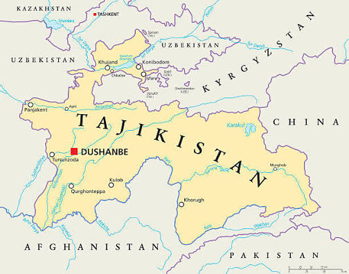

Ҷумҳурии Тоҷикистон давлатест дар қисми ҷанубу шарқии Осиёи Марказӣ ки бо таърихи бой, табиати кӯҳсор ва фарҳанги қадимаи худ машҳур аст. Пойтахти он шаҳри Душанбе мебошад.
Душанбе — пойтахти сабз ва зебои Тоҷикистон аст, ки номаш аз рӯзи ҳафтаи «душанбе» гирифта шуда, ба бозорҳои қадимаи ин мавзеъ алоқаманд аст. Ин шаҳр маркази асосии сиёсӣ, иқтисодӣ ва фарҳангии кишвар буда, дар водии Ҳисор ҷойгир шудааст.